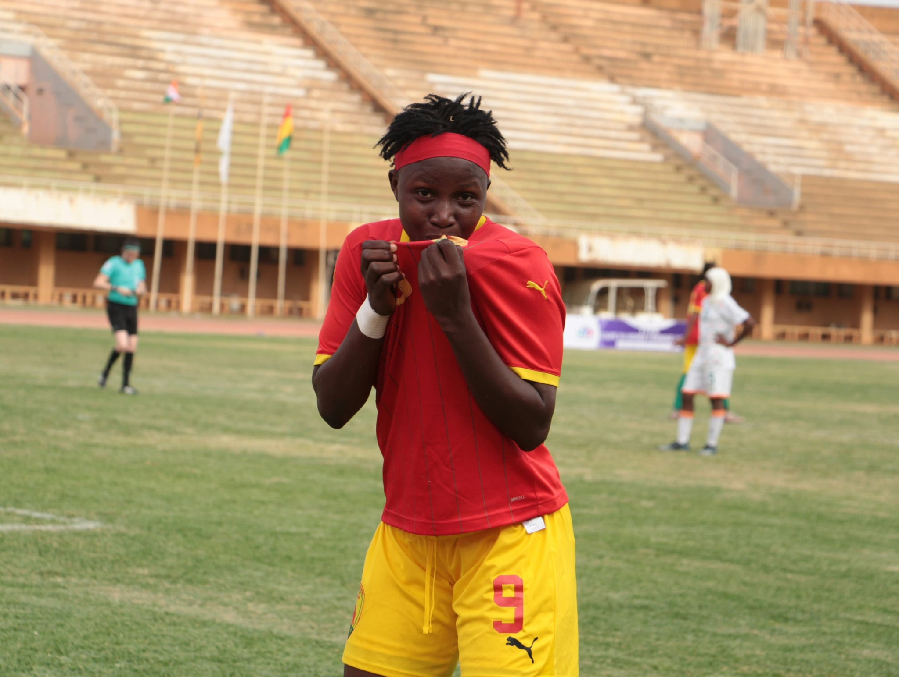

Le Syli national féminin U17 a réussi une belle entrée en matière en s’imposant largement face au Niger (5-2), mardi à Niamey, lors du match aller du premier tour des éliminatoires de la Coupe du Monde féminine U17 Maroc 2026.
Grâce à cette victoire convaincante à l’extérieur, la Guinée prend une option sérieuse sur la qualification avant la manche retour.
Une attaque guinéenne en grande réussite
Les Guinéennes ont affiché beaucoup d’efficacité offensive au cours de cette rencontre. Elles ont rapidement pris l’ascendant sur leur adversaire grâce à un jeu direct, une bonne intensité et une réelle maîtrise dans les moments clés.
Aminata Touré s’est particulièrement illustrée avec un triplé. Kouyaté Aïcha et Nana Camara ont également marqué pour permettre au Syli féminin U17 de prendre une avance importante dans cette double confrontation.

Photo : Fédération Guinéenne de Football (FGF)
Un avantage important avant le match retour
Avec ce succès 5-2, la sélection guinéenne se place dans une position favorable avant le match retour programmé le 18 avril au stade Général Seyni Kountché de Niamey.
Sauf retournement de situation, la Guinée abordera cette seconde manche avec confiance. En cas de qualification, elle pourrait retrouver le Nigeria au deuxième tour.
Le Syli féminin U17 vise plus loin
Ce résultat confirme les ambitions de la Guinée dans ces éliminatoires du Mondial féminin U17. Avec une génération prometteuse et une prestation offensive solide, le Syli féminin espère poursuivre sur cette dynamique et se rapprocher d’une qualification historique pour le tournoi de 2026 au Maroc.
Crédit photo : Fédération Guinéenne de Football (FGF)